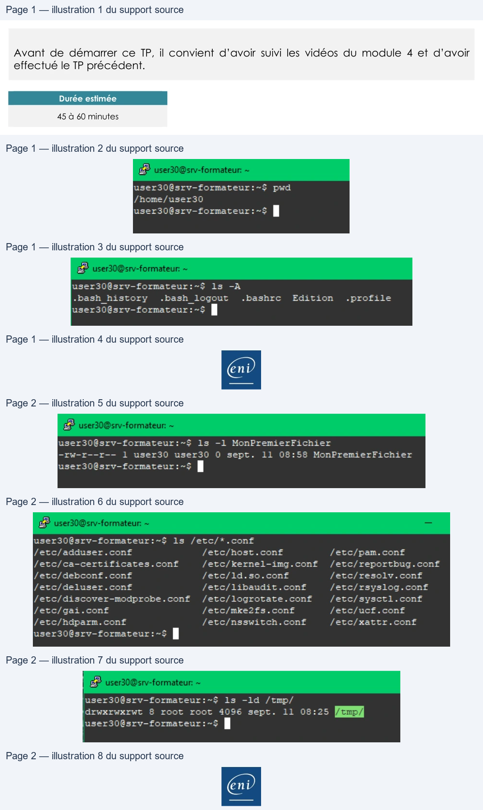

Transcription du document du Drive TSSR. La mise en forme est adaptée au Web ; les compléments IA du portail sont présentés séparément.
Utilisation d'une distribution GNU/Linux
TP du Module 04 – Fichiers et dossiers sous Linux
Avant de démarrer ce TP, il convient d’avoir suivi les vidéos du module 4 et d’avoir
effectué le TP précédent.
Durée estimée
45 à 60 minutes
Dans le module que vous venez de parcourir, vous trouverez les commandes nécessaires
pour répondre aux questions.
1. Où êtes-vous positionné dans l'arborescence ?
pwd
2. Existe-t-il des fichiers et des répertoires ?
ls -A
3. Créez un fichier vide appelé MonPremierFichier.
touch MonPremierFichier
4. Affichez les permissions et le propriétaire attribués à ce fichier.
ls -l MonPremierFichier
Page 1/2
© ENI – Tous droits réservés
user30Ësrv-formateur:-$
pwd
user30@srv-formateur:-$
ls
-A
-bash history
bash logout
.bashrc
Edition
profile
Utilisation d'une distribution GNU/Linux
5. Affichez les fichiers se terminant par l'extension .conf dans le répertoire /etc.
ls /etc/*.conf
6. Affichez les caractéristiques détaillées du répertoire /tmp (pas son contenu), que
remarquez-vous de particulier ?
ls -ld /tmp
Page 2/2
© ENI – Tous droits réservés
user308srv-formateur:-$
1s
-1 MonPremierFichier
-rw-r--r-—-
1
user30
user30
0
sept.
11
08:58
MonPremierFichier
user30@srv—formateur:~$ |
user30@srv—-formateur:~5
ls
/etc/*.conf
fetc/adduser.cont
fetc/host.cont
fetc/pam.conf
fetc/ca-certificates.conf
fetc/kernel-img.conf
/etc/reportbug.conf
fetc/debconf.conf
fetc/ld.so.conf
fete/resoly.cont
fetc/deluser.cont
fetc/libaudit.conft
fetc/rsayslog.cont
fetc/discover-modprobe.conft
/etc/logrotate.cont
fetc/sysctl.cont
fetc/gai.conf
fetc/mke2fs.cont
fetc/uct.cont
fetcfhdparm. cont
f/etc/nsswitch. cont
fetc/xmattr.cont
Grwxrwarwt
$
root
root 4096
sept.
11
08:25
